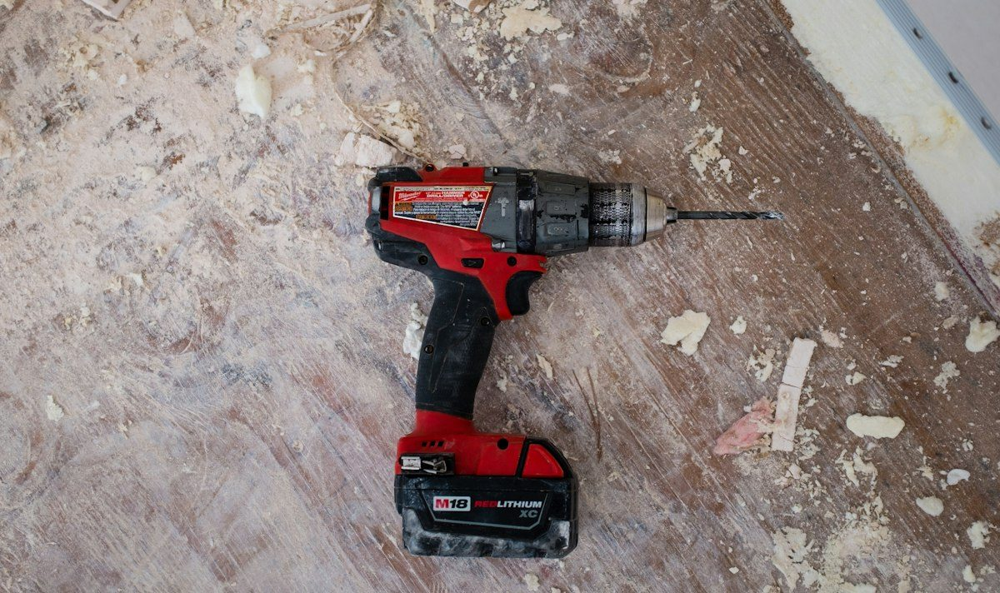

Como escolher parafusadeira e kit de ferramentas para casa (móveis, armários e gavetas)

1. O problema explicado em linguagem simples
Uma gaveta travando no trilho, uma porta de guarda-roupa desalinhada ou uma cadeira de escritório com parafusos folgados são exemplos típicos de manutenção doméstica em que ter apenas uma chave de fenda velha e gasta acaba espanando a cabeça do parafuso ou esfarelando a madeira de MDF/MDP.
Escolher um jogo de chaves com pontas variadas (Phillips, Fenda, Allen e Soquetes) aliado a uma parafusadeira sem fio com controle de torque (embreagem regulável) facilita esses ajustes sem exigir força física excessiva — desde que você saiba regular a força da máquina para não estourar a madeira dos móveis.
2. Materiais, ferramentas e proteção necessários
Equipamentos de proteção individual (EPIs)
- Óculos de proteção transparentes: evitam que lascas de madeira ou uma ponta (bit) quebrada atinjam os olhos;
- Luvas de proteção leve (multitato): melhoram a firmeza ao segurar peças e evitam cortes nas bordas metálicas das corrediças de gaveta.
O que compõe o conjunto ideal
- Kit de chaves manuais e soquetes com pontas Phillips (`PH1`, `PH2`), Fenda e Allen (`3 mm` a `6 mm`);
- Parafusadeira a bateria (12V ou superior) com anel seletor de torque (aquela numeração de `1` a `15/18` logo atrás do mandril).
3. Alertas de segurança antes de usar parafusadeira ou furadeira
- Nunca fure paredes alinhadas com tomadas, interruptores, registros ou canos: um furo sobre um eletroduto energizado ou cano de gás/água causa risco de choque elétrico grave, vazamento ou inundação.
- Não use roupas largas, cabelos soltos, anéis ou correntes perto do mandril giratório: peças rotativas podem puxar fios e tecidos instantaneamente.
- Retire a bateria ou trave o gatilho na posição central antes de trocar a ponta (bit) ou broca: se o dedo escorregar no gatilho durante a troca, o mandril pode ferir a mão.
- Em móveis de MDF/MDP (guarda-roupas, armários de cozinha e gavetas): nunca use o modo "Furadeira" ou torque máximo para apertar parafusos, pois a rotação arranca a rosca da madeira prensada em um segundo.
4. Verificações permitidas para uma pessoa leiga (Como escolher e ajustar)
| Situação na sua casa ou escritório | O que verificar com segurança | Ferramenta e regulagem indicada |
|---|---|---|
| Gaveta travando ou raspando ao fechar | Retire os objetos pesados da gaveta e olhe as laterais: geralmente um parafuso da corrediça metálica afrouxou e a cabeça dele está batendo na rodinha ou no trilho | Chave Phillips manual (`PH2`) ou parafusadeira no torque baixo (nível 2 a 4) para facear o parafuso no trilho |
| Porta de armário torta ou raspando na outra | Verifique os parafusos das dobradiças tipo caneco (35 mm): o parafuso traseiro prende na parede do móvel e o frontal regula o alinhamento lateral | Chave Phillips manual (prefira ajuste manual fino para sentir a rosca sem espanar o MDF) |
| Cadeira, mesa ou estante bamba | Confira os parafusos sextavados internos embaixo do assento ou nas travessas laterais | Chave Allen ou catraca com soquete do kit de ferramentas |
5. Instruções passo a passo para usar sem estragar os móveis
Etapa 1: Escolher a ponta (bit) que encaixa sem folga
- Antes de girar qualquer parafuso, encaixe a ponta da chave na fenda do parafuso desligada.
- Em parafusos em cruz (Phillips), a ponta `PH2` é a mais comum em móveis e dobradiças, enquanto a `PH1` serve para parafusos pequenos de puxadores. Se a ponta ficar sambando dentro da cruz, troque pelo tamanho correto para não arredondar o parafuso.
Etapa 2: Regular o anel de torque da parafusadeira no mínimo
- Gire o anel numerado da parafusadeira para os números mais baixos (entre `1` e `4`).
- Nessa posição, assim que o parafuso encostar no metal da corrediça da gaveta ou da dobradiça, a máquina fará um barulho de catraca (`"tec-tec-tec"`) e parará de girar o parafuso automaticamente, protegendo a madeira.
Etapa 3: Dar o aperto final manualmente com a chave
- Em móveis de MDF ou aglomerado, uma boa prática é usar a parafusadeira apenas para encostar o parafuso e fazer o último quarto de volta com a chave Phillips ou Allen manual.
- Assim você sente na mão a resistência real da madeira e evita que o furo espane.
6. Como reconhecer que não resolveu
- A corrediça metálica da gaveta está torta, com esferas de aço caindo ou a roldana plástica quebrada (exige substituição do par de corrediças);
- A madeira onde a dobradiça do armário é parafusada esfarelou e abriu uma cratera no MDF;
- O móvel está com a estrutura traseira descolada ou empenada por excesso de peso.
7. Quando parar e chamar um profissional
Acione um montador de móveis profissional ou marceneiro quando for necessário instalar armários aéreos pesados na parede (que exigem identificar a alvenaria resistente e a tubulação embutida), substituir ferragens embutidas complexas ou recuperar painéis de MDF rasgados.
8. Prevenção e conservação da parafusadeira e do kit
- Não guarde baterias de lítio totalmente descarregadas por meses: dê uma carga periódica e guarde a maleta em local fresco e seco.
- Não sobrecarregue gavetas com peso acima do suportado pelo fundo: o excesso de peso empena o fundo de Eucatex e força os trilhos laterais.
Kits e Parafusadeiras Recomendados (Mercado Livre)
Transparência: Os links abaixo levam para ofertas verificadas no Mercado Livre (links de afiliado, sem nenhum custo adicional para você) e para o comparativo completo no nosso site parceiro Achado Reviews.
Kit Ferramentas 46 Peças (Catraca, Soquetes, Allen, Torx, Fenda e Phillips)
Maleta organizada com todas as pontas para móveis, bicicletas, gavetas e ajustes domésticos rápidos.
Kit Jogo de Ferramentas Aço Carbono Titanium (11 Peças)
Conjunto essencial com martelo, alicate, trena, chaves e estilete para quem está montando a primeira caixa.
Parafusadeira e Furadeira WAP 12V WF12K3.2 com Bateria
Excelente controle de torque para montar e regular móveis de MDF, gavetas e dobradiças sem esforço.
Parafusadeira Furadeira de Impacto The Black Tools TB-21PX + Maleta
Vem com 2 baterias e maleta com acessórios para quem precisa de maior autonomia.
Quer ver a análise técnica comparando bateria de 12V vs. 21V/48V e qual modelo tem o melhor custo-benefício? Leia o review completo no nosso portal parceiro: Melhor Parafusadeira Sem Fio até R$ 150: Guia de Compra no Achado Reviews.
9. Fontes e referências consultadas
- ABNT NBR IEC 60745-2-1 / NBR IEC 60745-2-2: Ferramentas elétricas manuais operadas a motor — Requisitos particulares de segurança para furadeiras e parafusadeiras.
- Manuais de Instruções ao Usuário (WAP, Bosch, Makita e The Black Tools): Orientações sobre uso do anel seletor de torque, conservação de baterias de íons de lítio e EPIs.